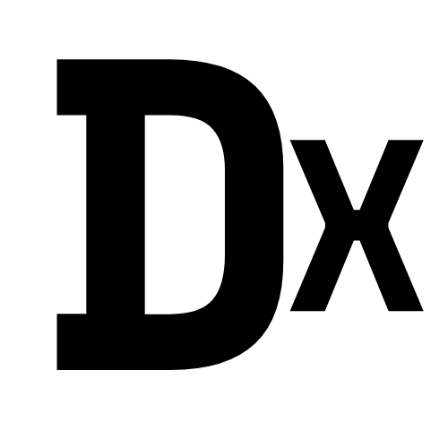

My Projects

Madat
Founder
I founded Madat to help high school students find activities they love. We guide them in academics, arts, technology, sports, and social impact. Madat helps students learn new skills and explore interests. We match activities to their strengths, helping them grow with confidence. Our goal is to support them in building strong portfolios for college.

Thought House
Founder
Thought House is where words inspire and connect. We help you find the perfect line for posts, speeches, or personal thoughts. Our quotes make it easy to express and reflect. Explore our collection and let words inspire you. Thought House is here for your moments of creativity.

Dex Security
Founder
I created Dex to make password security fun and simple. Dex turns passwords into Morse code or Binary, keeping them private and safe. It’s an easy tool anyone can use to protect their information. My goal is to help people secure their data without any hassle. With Dex, privacy feels simple and enjoyable!